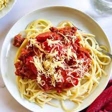

Creamy Bay Scallop Spaghetti

Description
This scallop pasta dinner with a creamy sauce is fast and easy. i cook the
scallops a bit longer than many chefs, but that gives the dish more flavor and
they're still tender and. I think you'll agree, the sherry sauce benefits
significantly from the longer cook time.
ingredient
- 8 ounces uncooked thick Spaghetti
- 1 tablespoon vegetable oil
- 1 pound bay scallops
- 2 tablespoons butter
- 3 cloves garlic, minced
- 2 teaspoon granted lemon zest
- 1 pinch red pepper flakes
- 1/3 cup dry sherry
- 1 cup heavy cream
- salt and pepper to taste
- 1 lemon, juiced
- 2 tablespoons chopped italian parsley, divided
- Freshly granted Parmigiano-Reggiano cheese,for serving
Steps
- Bring a large pot of lightly salted water to a boil. Cook spaghetti in the boiling
water, stirring occasionally until tender yet firm to the bite, about 10 minutes or
1 minute less than directed on the package.
- Meanwhile, heat oil in a large skillet over high heat. When oil just starts to
smoke, add scallops and move them into a single layer. Let sear on high for
about 1 minute. Toss to turn.
- Add butter and stir scallops until butter melts. Stir in garlic